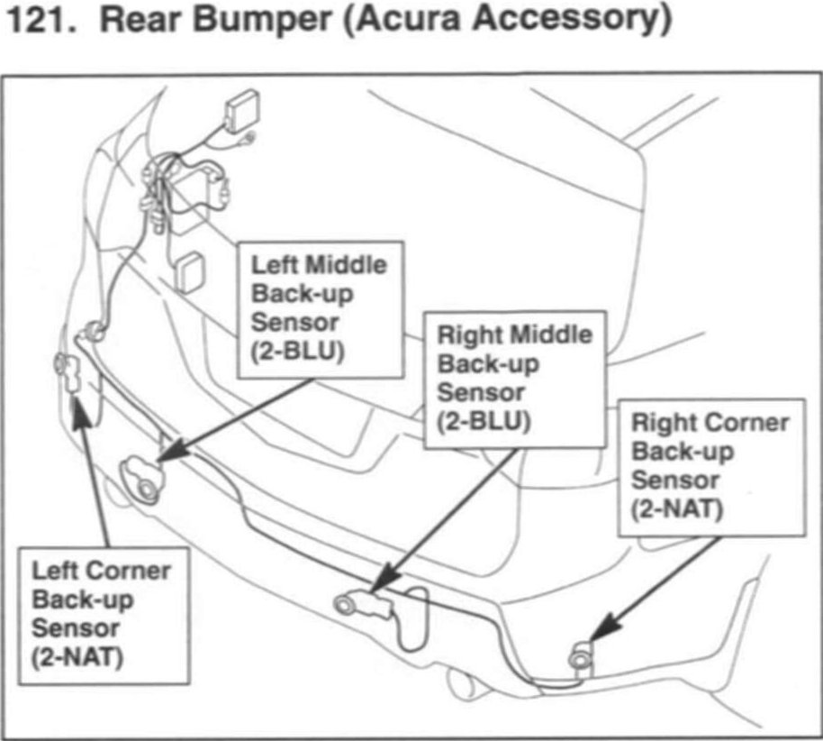

Operation CHARM
: Car repair manuals for everyone.
Home
>>
Acura
>>
2007
>>
MDX V6-3.7L
>>
Repair and Diagnosis
>>
Accessories and Optional Equipment
>>
Sensors and Switches - Accessories and Optional Equipment
>>
Collision Avoidance Sensor
>>
Locations
Collision Avoidance Sensor: Locations
